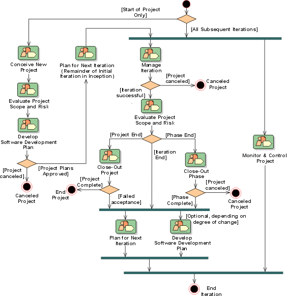

Project Management:
Workflow



In the initial iteration of the
Inception Phase, the Project Management discipline begins in Conceive
New Project, during which the initial Vision,
Business Case and Risk
List artifacts are created and reviewed. The objective is to obtain enough
funding to proceed with a serious scoping and planning exercise.
An embryonic Software Development Plan
is created, and the project bootstrapped into life with the initial Iteration
Plan. With this initial authorization, work can continue on the Vision,
Risk List and Business
Case in Evaluate Project Scope and Risk, to give
a firm foundation for fleshing out the Software
Development Plan in Develop Software Development Plan.
At the conclusion of Develop Software Development Plan, enough should be
known about the risks and possible business returns of the project, to allow an
informed decision to be made to commit funds for the rest of the Inception
Phase, or to abandon the project. Next, the initial Iteration Plan is refined to
control the remainder of the initial iteration in inception, in an invocation of
Plan for Next Iteration (the workflow detail used
here is the same as will be used for planning subsequent iterations - hence the
somewhat odd name in this context). In Plan for Next Iteration, the Project
Manager and Software Architect
decide which requirements are to be explored, refined or realized. In early
iterations, the emphasis is on the discovery and refinement of requirements; in
later iterations, on the construction of software to realize those requirements.
At this point, the Project Management
discipline merges into a common sequence for all subsequent iterations.
The iteration plan is executed in Manage Iteration,
which is concluded by an iteration assessment and review, to determine if the
objectives for the iteration have been achieved. The Iteration
Acceptance Review may determine that the project should be terminated, if
the iteration has significantly missed its objectives, and it is judged that the
project cannot recover during subsequent iterations.
Optionally, at about the mid-point of the iteration, an Iteration
Evaluation Criteria Review may be held, to review the iteration Test
Plan, which by this stage should be well-defined. This optional review is
usually held only for lengthy (six months and longer) iterations. It gives
project management and other stakeholders the opportunity to make mid-course
corrections.
In parallel with Manage Iteration, the routine daily, weekly and monthly
tasks of the project management are performed in Monitor
& Control Project, in which the status of the project is monitored and
problems and issues are handled as they arise.
Following the iteration assessment and acceptance review, and before planning
the next iteration, the Vision, Risk List and Business Case are revisited in Evaluate
Project Scope and Risk, with the idea that expectations may need to be reset
based on the experience of the previous iteration.
When the final iteration of a phase completes, a major milestone review is
held as part of Close-Out Phase and planning is done
for the next phase, assuming the project is to continue. At the conclusion of
the project, a Project Acceptance Review is
held as part of Close-Out Project and the project
terminates, unless the review determines that the delivered product is not
acceptable, in which case a further iteration is scheduled.
Detailed planning, in Plan
for Next Iteration, then leads into the next iteration. In parallel, changes
to the Software Development Plan are made at this time, in Develop Software
Development Plan, capturing lessons learned, and updating the overall Project
Plan (in the Software Development Plan) for later iterations.
Copyright
© 1987 - 2001 Rational Software Corporation
|  Disciplines >
Disciplines >
 Project Management >
Project Management >
 Workflow
Workflow